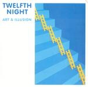

| Artist: | Twelfth Night |
| Title: | Art And Illusion |
| Label: | Cyclops CYCL 132 |
| Length(s): | minutes |
| Year(s) of release: | 1984/2003 |
| Month of review: | [12/2003] |
| 1) | Counterpoint | 5.57 |
| 2) | Art & Illusion | 3.51 |
| 3) | C.R.A.B. | 4.34 |
| 4) | Kings & Queens | 5.43 |
| 5) | First New Day | 5.53 |
| 6) | Blue Powder Monkey | 7.22 |
| 7) | Blondon Fair | 5.34 |
| 8) | Take A Look | 11.59 |
| 9) | Counterpoint (alternate) | 5.59 |
| 10) | C.R.A.B. (alternate) | 3.56 |
| 11) | Kings & Queens (alternate) | 5.52 |
| 12) | Take A Look (alternate) | 4.31 |
The next one, Art & Illusion, is even more catchy. It is striking that there are elements in these songs that I can not remember ever hearing, but now that I play them with a headphone on, they seem to pop up out of nowhere. The drums are pounding again. Noteworthy is the fact that Twelfth Night changed from an epic churner into a seemingly catchy affair, but that still the band to me is recognizably Twelfth Night. I guess it is a bigger difference that we now have a new vocalist at the helm, although both carry about the same emotion in their voice, albeit in a different way.
We continue with C.R.A.B., which opens with the typical Twelfht Night bass lines, very percussively played. The sound is somewhat darkish with the repetitive bass lines running in the back. It gives me more of being a live exercise during one of their epics than a song on an album of this kind.
Kings & Queens is a hard hitting track, very sharp sounding. Andy Sears adds his plodding dramatic vocals. It is not only the title, but the band also reminds of the more commercial side of Killing Joke. On the hand the band tries to evoke images of a pop band, but they are too heavy, too extreme (for that time).
On the other hand, First New Day is a keyboards ballad, a strong one in fact with all members playing the keyboard. Blue Powder Monkey is one of the three MCA demo tracks, tracks that one could say were meant for the Art & Illusion alum, except that they were postponed to the later X album. The sound quality is indeed more demoish, but the songs are also more ehm progressive. It is not just that the song length goes up, but although the music continues to be quite catchy here, there is more room for variation and daring. In any case, the melodies are fine on this one, with some subtle vocal melodies. Later we even get a keyboard solo. The guitar solo at the end is almost typically Twelfth Night, but a bit rowdy and bluesy sounding as well.
Daring is one of the main components of the mysterious Blondon Fair. Crawling under the skin of the agressors of the Holocaust this is a dark and brooding affair with loud percussion and plenty of bass. A distinctive track.
Take A Look is the epic on this revamped Art & Illusion. Andy Sears' distrust in the machine is made explicit here. I have always had a mixed feeling about the lyrics, being a computer scientist myself and seeing nothing mysterious or dangerous in them. The only danger is computers is that people led them determine what is possible in life or society. If the workings of a computer determine the rules, you should make damn well sure that your software was well devised. The song has elements that I do not remember from the original that I know, mainly around the five minute mark. In fact, later I get the same impression. A powerful epic track in the line of the foregoing catchy tunes with the same emotive vocals.
Now we come to the four alternate versions, which can be considered bonus tracks to what now can be called the full Art & Illusion album. All of these are also present on the foregoing part, so I will not consider them in detail. Being demo recordings they sound a bit more demoish than the foregoing. The song differ mainly in minor details, except for Take A Look, which is about one third in length of the original. It makes one think all the tracks on this album could have been lengthened into epics. Whether that is a good idea is a different matter. Anyway, this version is a pacey one.